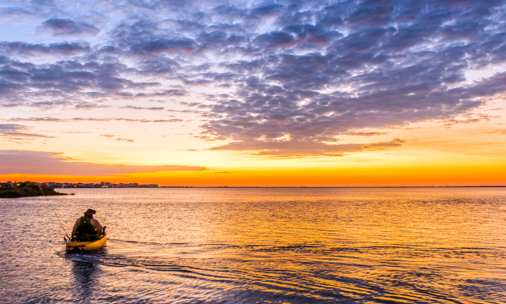
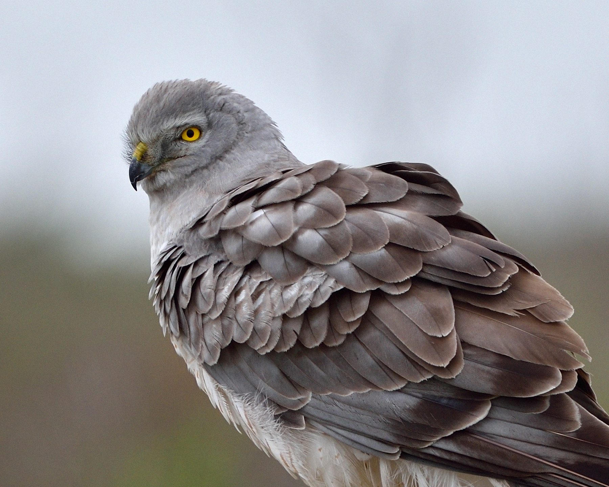
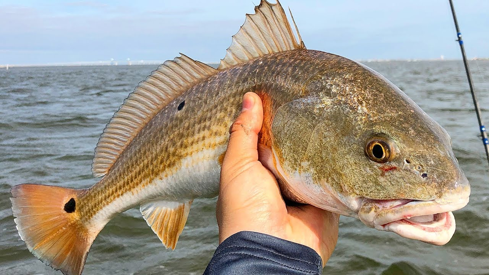

Area & Geography
Galveston Bay is a large estuary located on the Texas Gulf Coast, covering approximately 1,600 square kilometers. It is fed by the Trinity and San Jacinto rivers and opens into the Gulf of Mexico.
The bay's geography includes extensive wetlands, marshes, oyster reefs, and seagrass beds that provide critical habitat for wildlife and support a diverse ecosystem.
Nature & Ecosystem
Galveston Bay is one of the largest estuaries in the United States, located along the Texas Gulf Coast. It receives freshwater from the Trinity and San Jacinto rivers before flowing into the Gulf of Mexico.
The bay supports extensive wetlands, oyster reefs, and seagrass beds that provide habitat for fish, birds, and marine life. It plays a crucial role in coastal protection and water filtration for the region.
Coastline & Challenges
Galveston Bay's coastline is dynamic, shaped by natural processes and human activities. Coastal erosion, subsidence, and sea level rise threaten communities and ecosystems along the bay.
Efforts to restore wetlands, manage stormwater, and implement sustainable development practices are critical to preserving the bay's health and resilience.
Economy & Human Impact
The bay is central to the Houston metropolitan area's economy, supporting shipping, petrochemical industries, fishing, and tourism. The Port of Houston is one of the busiest ports in the world.
Balancing economic growth with environmental protection remains a major challenge due to pollution risks, habitat loss, and increasing urbanization.
Activities & Adventures

Kayaking & Boating
Explore the marshes, wetlands and open waters of Galveston Bay. Kayaking offers a peaceful way to experience the rich coastal ecosystem.

Bird Watching
Spot hundreds of migratory species along the coastline. Galveston Bay is a paradise for bird lovers and wildlife photographers.

Fishing
The bay is a popular destination for recreational and commercial fishing, offering rich waters filled with diverse marine life.